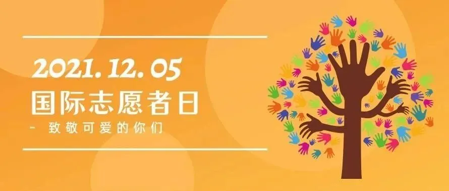
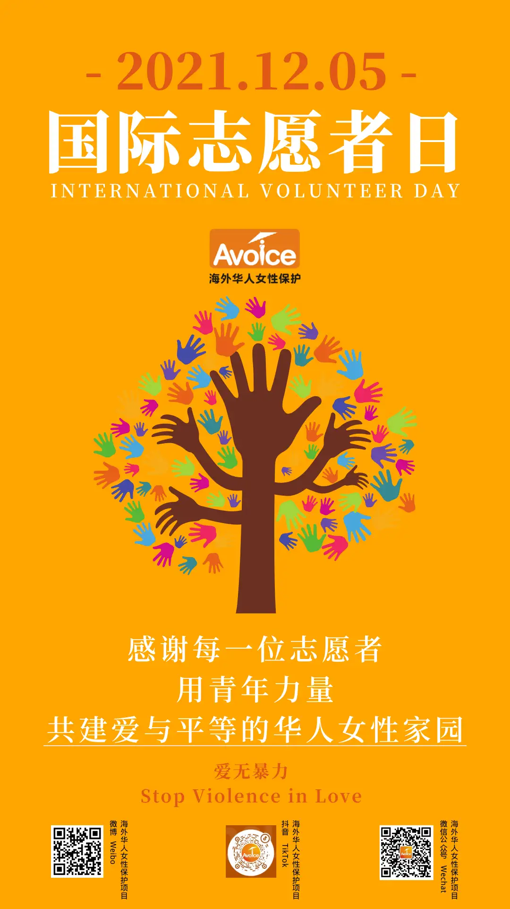

 项目团队Avoice海外华人女性保护项目团队：“国际青年志愿者网络”由来自海内外众多知名高校、学术机构、企业的300多名优秀中国青年组成，他们分布于全球二十多个国家，拥有多元学术背景，尤其关注与性别平等、青年赋能等相关的发展领域，通过实施Avoice海外华人女性保护项目、参与可持续发展领域学术研究、开展跨文化交流合作等方式，向国际社会传播中国公益故事，展现中国青年的责任心和行动力，发出中国青年的声音。文字 I Avoice Team 海报&排版 I 徐嘉蕾